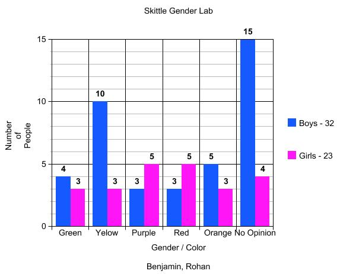

How does the numeber of electoral collage votes that a winning presidental canidate gets
and the number of executive orders that they make reatle to eachother?
We went and researched on tuvalabs.com to find out the relation between electoral votes and executive actions
We found that over the last 45 years the amount of electoral votes is going down and so is
the amount of executive orders being made by the presidents
Ronald Regans got over 525 Electoral Votes in 1984 but just 20 years later 16 years later George W. Bush only got 271.
The results show that a number of Executive Actions do change with a number of Electoral Votes,
The trend is going down for both but the president with the most
Electoral Vote heading into office are making more Executive actions.
A possible reason for this is that the more electoral votes that a president gets makes him feel more
confident about the chance he has to get reelected in the next
4 year and he is more likely to make controversial or partisan actions.
President is getting less electoral votes as the time goes on, it used to be that the winning candidate
would win by a small landslide and that the loser really stood no chance
in the end but now it has changed where the winner of the election maybe be wining by just 1 electoral vote.
This has lead to a steep drop in the amount of executive action made by the president, during the
FDR administration 3,728 were singed but just less than 1/10 of that are being signed by the current presidents.

Conclution
The elections are becoming more partisan and the president are in fear that
they won't be back for a second term if they make a lot of
executive actions which has lead the amount of them to drop